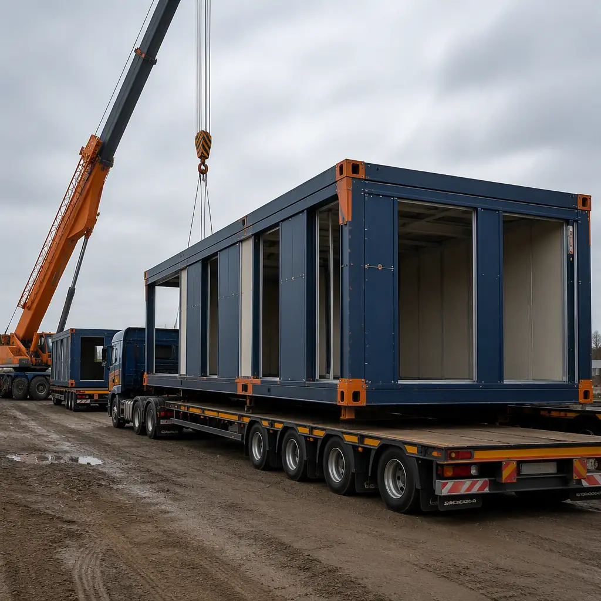
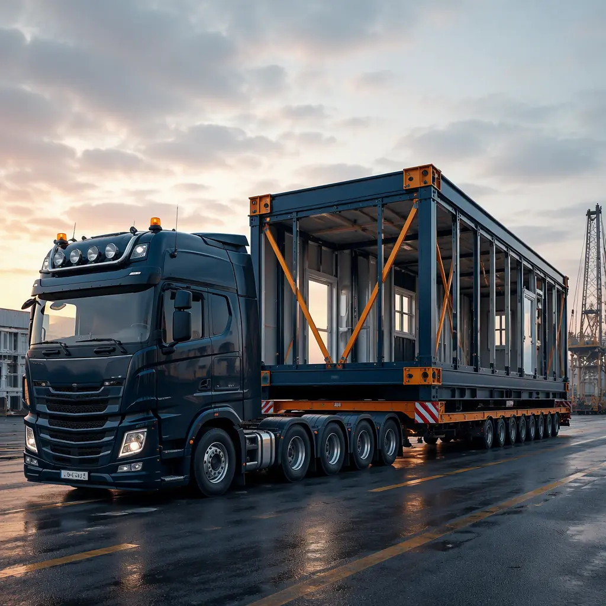
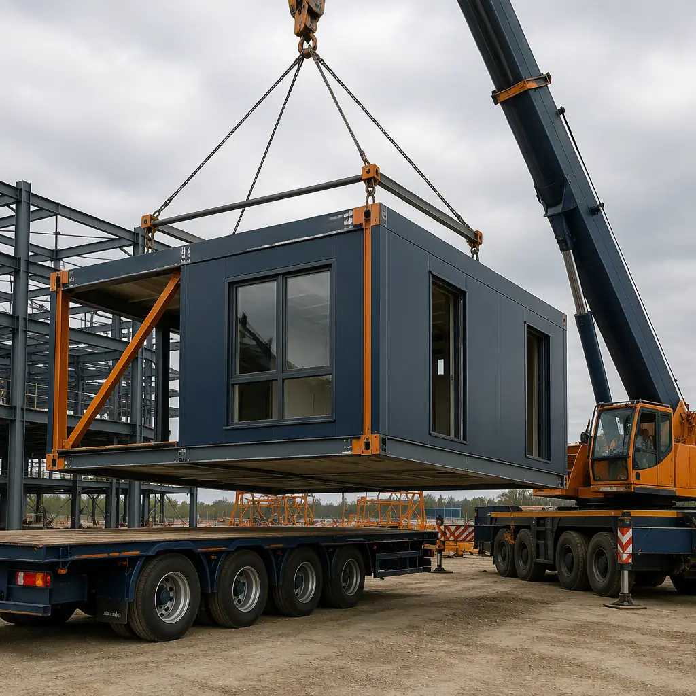

Transporting a finished building module from factory to site is not like delivering construction materials. A 14.5m × 4.2m apartment module weighing 16 tonnes on a flatbed trailer is an oversize load in every jurisdiction, requiring route surveys, police escorts, and permits that take 4–8 weeks to obtain. One permit delayed by a single missing signature can hold up a 200-module project for a week at $15,000–$25,000 per day in crane standing time and schedule impact. This guide covers the complete logistics chain — factory dispatch, route planning, crane selection, and on-site installation sequencing — so developers can budget and plan the transportation phase with the same rigor as the factory production phase.

The Transportation Challenge — What Makes Modular Logistics Different
Three characteristics set modular building transportation apart from standard freight logistics:
Physical dimensions exceed standard limits. A typical apartment module is 12–15m long, 3.5–4.2m wide, and 3.2–3.6m high. The maximum legal dimensions without permits in most jurisdictions are 12.5m length, 2.5m width, and 4.0m height. Every module is oversize in at least one dimension, and usually all three. This triggers mandatory permits, route surveys, and in many cases police or pilot vehicle escorts.
Finished value, not raw materials. A module arriving on site is a finished room — windows installed, plumbing pre-tested, drywall taped and painted, flooring laid. Damage during transport is not a material loss; it's a finished-goods loss requiring rework that can take 2–5 days per affected module. Transport packaging and weather protection are non-negotiable.
Just-in-time sequencing. The crane is on site for a fixed window (typically 4–12 weeks for a mid-rise project). Every module must arrive in installation sequence order because the crane lifts modules directly from the truck to their final position. A module that arrives out of sequence sits on the ground, blocking the laydown area, while the crane waits for the correct module — at $2,500–$5,000 per hour in crane standing time (see our cost analysis for modular construction).

Route Planning and Permits — The 4–8 Week Lead Time
Route planning begins with a route survey: a physical drive of the proposed delivery route by a logistics engineer who documents every bridge (load rating and clearance), overhead utility line (minimum height), tight turn (turning radius analysis), and weight-restricted road. The survey produces a Route Survey Report that accompanies the permit application. This is not a step that can be skipped or replaced with Google Maps — the permit authority requires a signed survey from a qualified engineer.
Key regulatory thresholds that trigger additional requirements:
- Width over 3.0m: Pilot vehicle required ahead, and in some jurisdictions behind as well. Pilot vehicles communicate with the truck driver via two-way radio and warn oncoming traffic.
- Width over 3.5m: Police escort typically required. This adds $800–$1,500 per module per trip in escort fees and must be coordinated with the police jurisdiction's scheduling office 2–3 weeks in advance.
- Length over 20m (tractor + trailer + module): Rear pilot vehicle required. Turning radius analysis mandatory for every intersection on the route.
- Gross vehicle weight over 44 tonnes: Structural assessment of every bridge on the route required. Bridges rated below the vehicle weight require an alternative route or a temporary bridge strengthening assessment.
- Height over 4.3m: Overhead utility clearance survey required. Any utility line below 4.6m requires a temporary lift or de-energization by the utility company — this can add 4–12 weeks lead time.
Permit applications take 4–8 weeks for standard oversize loads, 8–16 weeks for police-escorted loads. The application requires the Route Survey Report, vehicle registration, insurance certificate (minimum $5M general liability typically required), and module weight/dimension drawings stamped by a structural engineer. For cross-border logistics involving multiple jurisdictions, see our guide to international modular construction logistics.
Crane Selection — Matching Lift Capacity to Module Weight
Crane selection is determined by three numbers: the heaviest module weight, the furthest reach from the crane position to the module's final location, and the available crane setup area on site. A 16-tonne module at 35m radius requires a 200–250 tonne crawler crane or a 300–400 tonne mobile crane. The crane itself arrives on 8–12 truckloads and takes 2–3 days to assemble on site.
| Crane Type | Typical Capacity | Max Module at 30m | Daily Rate | Best For |
|---|---|---|---|---|
| 200t Crawler | 200 tonnes | 14t at 30m | $3,500–$5,000 | Mid-rise, tight sites, soft ground |
| 300t Mobile | 300 tonnes | 21t at 30m | $5,500–$8,000 | High-rise, large modules |
| 400t Mobile | 400 tonnes | 28t at 30m | $8,000–$12,000 | 10+ stories, heaviest modules |
| Tower Crane | 16–32t at tip | 16–32t at 30m | $1,500–$2,500 | Long-duration projects (12+ weeks) |
Tower cranes have lower daily rates but higher mobilization costs ($40,000–$80,000 for erection and dismantle) and longer lead times (4–6 weeks). They're economical for projects with 100+ modules where the crane will be on site for 8+ weeks. Mobile cranes have higher daily rates but zero mobilization cost beyond the crane arriving on its own wheels, making them better for shorter installation windows. For most mid-rise modular projects (50–150 modules), a 200–300 tonne crawler or mobile crane is the optimal choice.
Delivery Sequencing — Just-in-Time Module Flow
A typical installation day follows a precise sequence that must be planned to 15-minute accuracy:
- 06:00–07:00: First truck departs factory staging yard. Module was loaded the previous evening and inspected for transport damage before departure.
- 08:30–09:00: First truck arrives at site holding area (typically 500m–2km from site). Driver radios crane coordinator for clearance to approach.
- 09:00–09:15: Truck approaches crane position. Rigging crew attaches lifting slings to module lifting points (four-point lift with spreader bar).
- 09:15–09:25: Module lifted from truck to building position. Rigging crew on the building guides the module onto bearing points. Surveyor verifies position within ±5mm.
- 09:25–09:35: Rigging detached. Truck departs. Weather seal compression check by site engineer.
- 09:35: Next truck cleared to approach. Cycle repeats.
At 8–10 modules per day, a 100-module building requires 10–13 installation days. The factory must produce modules in the same sequence they will be installed: lower floors first, corner modules first (to establish the building grid), then infill modules. The production schedule and the delivery schedule must be locked 4 weeks before the first delivery to allow permit applications to reference the correct module dimensions and weights (BIM coordination is essential for this synchronization).

Module Protection During Transport
Modules travel on open flatbed trailers exposed to weather, road spray, and wind loads up to 130 km/h (highway speed plus headwind). Protection measures are mandatory, not optional:
- Weather enclosure: Modules are wrapped in reinforced polyethylene shrink-wrap (minimum 200µm thickness) with taped seams. This protects against rain ingress during the 4–12 hour journey and serves as temporary weather protection on site until the roof is installed (typically 1–3 days after placement).
- Window and door protection: All glazing is covered with adhesive protective film (not just tape — tape adhesive residue on glass requires solvent cleaning). Door openings are sealed with plywood panels to prevent wind-driven rain ingress and to keep the module interior clean.
- Internal bracing: Drywall partitions in modules over 10m long require temporary bracing during transport to prevent cracking from trailer flex. Bracing is removed after the module is placed and connected to adjacent modules. For projects in seismic zones, transport bracing design is integrated with the permanent lateral system — see our guide to modular seismic design.
- Corner protection: Steel corner guards (3mm plate) are bolted to module lifting points during transport. These absorb impact during loading/unloading and prevent damage to the module's finished exterior corners.
Site Logistics — Laydown Area and Access Requirements
The site must accommodate three distinct zones during module installation:
- Crane setup area: For a 200–300 tonne mobile crane, a compacted gravel pad 15m × 20m with 300mm minimum thickness and bearing capacity of 250 kPa. Crawler cranes require a wider pad (20m × 25m) but can operate on softer ground (150 kPa). The crane pad is typically the first item constructed on site, concurrent with foundations.
- Truck maneuvering area: A 50m straight approach to the crane position with sufficient width (6m minimum) for a 22m tractor-trailer combination to align with the crane lifting zone. Tight urban sites that cannot provide this approach may require a mobile crane with a longer boom, increasing the crane size and daily rate.
- Laydown/holding area: Space for 2–4 trucks to queue awaiting crane access. Typically 500–1,000 m² of hardstanding within 2km of the site. On constrained urban sites, this may be a nearby parking lot or closed street section coordinated with the local traffic authority.
For projects in dense urban environments where none of these conditions are easily met, modular construction may require a different crane strategy (luffing jib tower crane with higher reach) or off-site module assembly with smaller module sizes. This is one of the key decision points in the modular construction ROI analysis for developers.
Cost Model — Transportation Budget by Project Scale
| Cost Element | 50-Module Project | 100-Module Project | 200-Module Project |
|---|---|---|---|
| Route Surveys & Permits | $12,000–$18,000 | $18,000–$25,000 | $25,000–$35,000 |
| Transport Per Module | $2,500–$4,000 | $2,000–$3,500 | $1,800–$3,000 |
| Police/Pilot Escorts | $800–$1,500/module | $700–$1,200/module | $600–$1,000/module |
| Crane (Mob + Operation) | $45,000–$70,000 | $70,000–$110,000 | $120,000–$180,000 |
| Total Logistics Budget | $185K–$290K | $290K–$460K | $505K–$815K |
| Logistics % of Project | 5–8% | 4–7% | 3–5% |
Transportation logistics typically represent 3–8% of total modular project cost, with the percentage decreasing as project scale increases. The key insight for developers: logistics costs are largely fixed per project (permits, crane mobilization) and per module (transport, escorts). They scale almost linearly, which means there's no dramatic economy of scale in logistics — unlike factory production costs, which drop 15–25% from 50 to 200 modules. For an analysis of how logistics costs factor into the overall project budget, see our turnkey modular construction cost guide.
Getting logistics wrong is the fastest way to lose the schedule advantage of modular construction. The permit process alone can consume 8 weeks — start it the day the foundation design is finalized.
Transportation logistics is the phase of modular construction where the schedule advantage is either realized or destroyed. A well-planned logistics operation delivers modules on a 35–45 minute cycle, installing 8–10 modules per day, and completes the structural phase of a 100-module building in under two weeks. A poorly planned one has trucks waiting for permits, a crane sitting idle at $4,000/hour, and modules arriving out of sequence. The difference between the two outcomes is 4–8 weeks of planning before the first module ever leaves the factory. For projects evaluating the full modular delivery timeline, see our complete developer's guide to modular construction ROI.